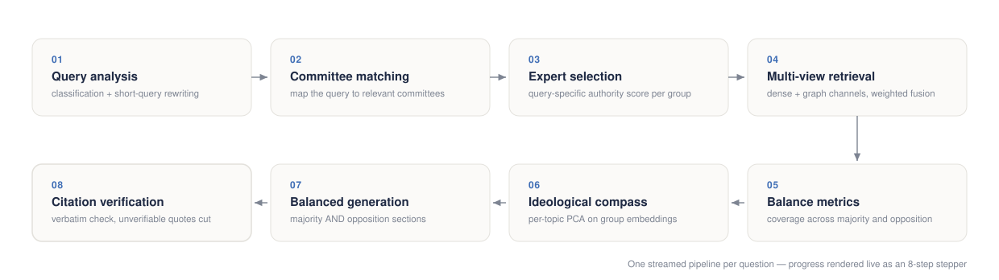

Who Speaks Matters: Authority-Aware Multi-View Retrieval-Augmented Generation over Italian Parliamentary Proceedings
ISWC 2026, In-Use Track · Springer · to appear
Data scientist working on retrieval-augmented generation over knowledge graphs.
I build systems whose answers can be checked against their sources: who said something, with what authority, and where in the official record.
Featured research
Authority-aware, multi-view retrieval-augmented generation over the proceedings of the Italian Chamber of Deputies.
LLM summaries of parliamentary debate tend to favour dominant voices, quote out of context, and flatten disagreement. ParliamentRAG treats who speaks as seriously as what is said: answers cover every parliamentary group, majority and opposition alike, and the system checks every quotation verbatim against the stenographic record before it reaches the reader.
In a blind study against Google NotebookLM judged by six domain experts, the system scored higher on parliamentary-group coverage and citation faithfulness, with human ratings favouring it on source and balance dimensions. The methodology and full results are in the paper.
The work is fully open: the knowledge graph is published as an RDF dataset on Zenodo (CC BY-SA 4.0) and in tabular form on Hugging Face, with project terms under the w3id.org/parliamentrag namespace. The system is also an MCP server, so AI assistants can query the official records directly.

705 plenary sessions · 174k+ speech chunks · 17.3k roll-call votes · 6.9M individual vote records
XIX Legislature, updated continuously from official open data
Publications
ISWC 2026, In-Use Track · Springer · to appear
ISWC 2026, Posters & Demos · CEUR-WS · to appear
Other work
The 2016 municipal election results of my home town, extracted from PDFs on the official website and republished as machine-readable CSV and JSON.
A site that tracked up-to-date COVID-19 statistics for Roseto degli Abruzzi.
Data management project: an anime graph database with recommendation queries, University of Milano-Bicocca.
Text processing, representation and mining over the Harry Potter books, University of Milano-Bicocca.
Research interests
I work across information retrieval, knowledge graphs and large language models. The questions I keep returning to: how to make generated text verifiable against its sources, how to represent who is speaking and with what authority, and how to evaluate systems beyond a single accuracy number.
Retrieval-augmented generation · knowledge graphs · information retrieval · semantic web and linked open data · evaluation of LLM systems.
Currently exploring semantic axes for political-position mapping, and how parliamentary stances evolve over time.
About
I grew up in Roseto degli Abruzzi, on the Adriatic coast. My first data projects were about my home town: republishing its 2016 election results in machine-readable formats, and tracking its COVID-19 numbers day by day. ParliamentRAG comes from the same instinct, applied to the national parliament.
I studied Computer Science at the University of Bologna and Data Science at the University of Milano-Bicocca, where the ParliamentRAG research was carried out. I live between Rome, Milan and Roseto.
I collect technical and research notes in Notes.